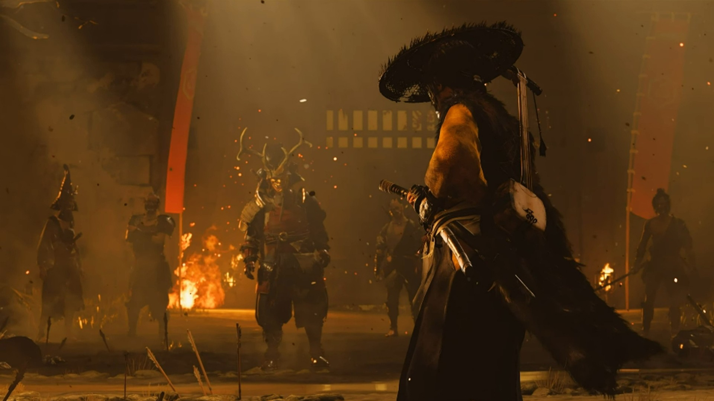
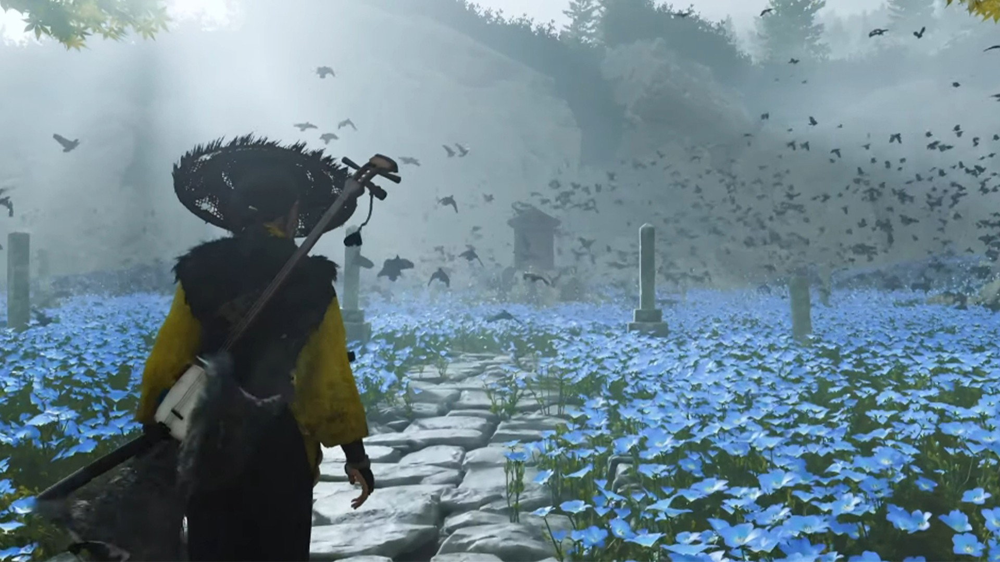

王思聪“献祭”满级号后，《流放之路2》彻底火了
兄弟们，摸着良心说，当你兴冲冲地花五千大洋把PS5抱回家，结果发现真正能打的独占游戏掰着手指头都能数过来，心里有没有过那么一丝丝后悔？现在，索尼又把宝全压在了《羊蹄山之魂》上，把它死死绑在PS5的战车上。这一下，玩家圈直接炸了！一个直击灵魂的问题冲上了热门：为了这一部游戏，真的值吗？
点开各大社交平台，好家伙，那叫一个热闹。有人说"买PS5就为了玩这个？"，也有人直接放话"等上PC再玩，谁爱当冤大头谁当"。当然，也有铁杆索粉在据理力争，说第一方独占的品质和优化是第三方给不了的。但说白了，绝大多数普通玩家买PS5是为了"省心"玩大作，可没想到有一天，这份"省心"反而成了被拿捏的软肋。厂商跟你谈情怀，可玩家算的是真金白银的账。

咱得承认，《羊蹄山之魂》作为索尼第一方独占，确实有它的排面。顶级的画面表现、DualSense手柄那细腻到毛孔的触觉反馈、还有无外挂的纯净联机环境，这些都是实打实的优势。但问题在于，游戏以"独占"为核心卖点，玩家却要为这份"独占"的入场券承担全部溢价。一台PS5三千多，再搭上游戏和配件，五千块就这么没了。为了玩一款游戏，先交五千块的"门槛费"，这笔买卖怎么算都让人觉得心里打鼓。

那《羊蹄山之魂》到底有没有成为那个"唯一"的资格？想想Switch上的《塞尔达传说：旷野之息》，那是真真正正能让玩家为一台机器买单的神作。反观《羊蹄山之魂》，前作《对马岛之魂》口碑确实硬，但还没到那种"非玩不可、不玩抱憾终身"的程度。再看看隔壁《战神：诸神黄昏》《地平线：西之绝境》，哪个不是大作？可它们也没能把"独占"玩成"绑架"。口碑不等于销量，更不等于玩家愿意掏出真金白银来投票。当"独占"从品质保障变成了"不得不买"的心理枷锁，玩家们自然会重新审视自己跟这台机器之间的关系。

厂商谈独占，谈的是壁垒和生态；玩家谈独占，谈的却是门槛和钱包。独占这事儿，本身就是一把双刃剑。对厂商来说，它是守住阵地的护城河；但对玩家来说，它就是一道让人肉疼的付费墙。索尼把宝压在《羊蹄山之魂》上，是它的商业选择，可买不买单，主动权在咱们手里。
归根结底，游戏的终极价值不在于它是哪个平台的"专属"，而在于它能否真正触动你的内心。游戏嘛，自己玩得开心才最要紧。所以，最后问大伙儿一句：如果《羊蹄山之魂》口碑爆炸，你真的会为了它，咬咬牙把那台五千块的"启动器"抱回家吗？还是说，你宁愿再当个"等等党"，赌它三年后上PC？觉得值的扣1，觉得不值准备开喷的扣2，评论区说说你的理由！
关于我们
📱 公众号名称：三天游戏
✍️ 作者：曾三天
扫码关注公众号，获取每日最新资讯

商务合作与版权
商务合作 / 内容投稿 / 品牌推广
请关注公众号「三天游戏」后台留言联系
版权声明：本文由作者整理，转载需注明出处。